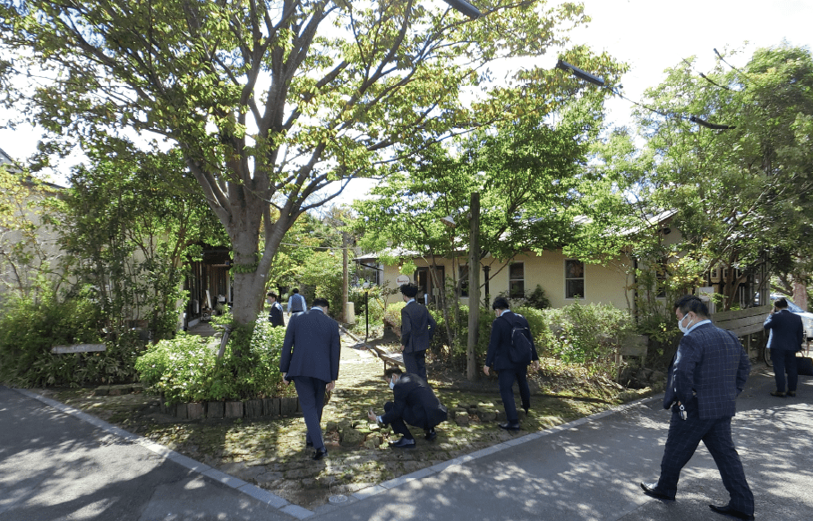
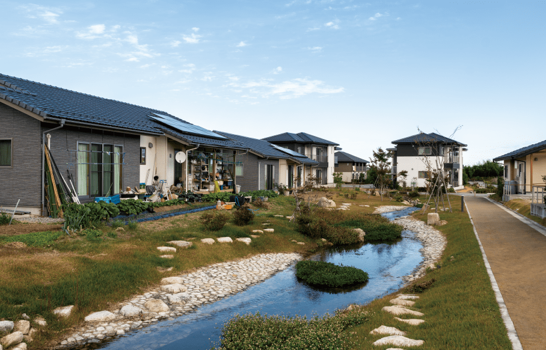
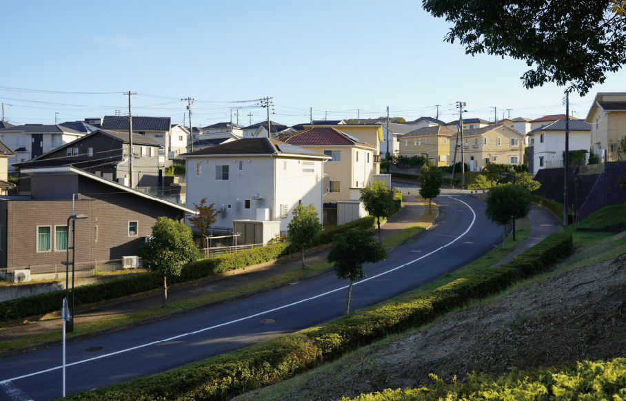
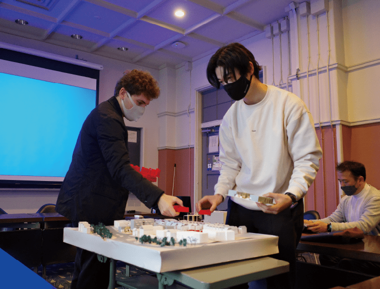
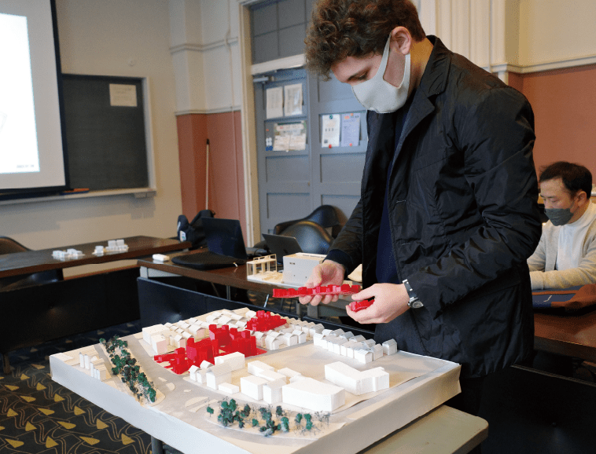
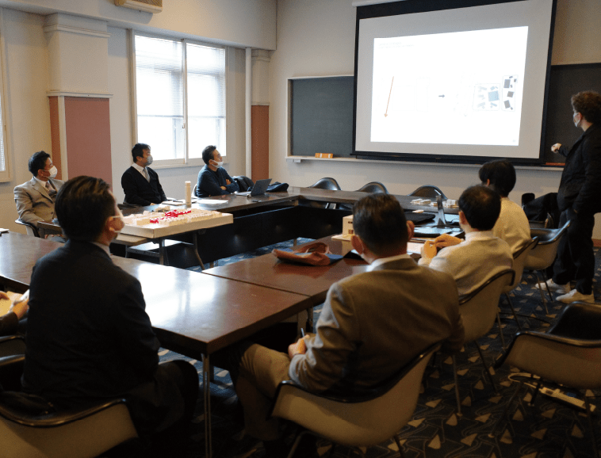
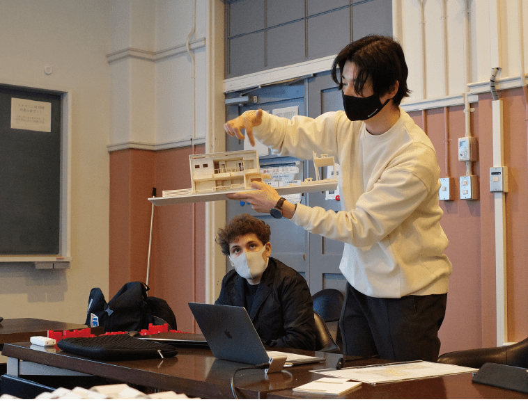

次世代住宅の在り方を求めて
-
Research background
研究の背景
-
日本が世界に先駆けて突入している「人生100年時代」の社会は、少子高齢化、自然災害、世界的気候変動、新型コロナウイルス等の社会変動要因といった、さまざまな不安的要素に直面しています。そんな次世代を担う人々の、今後の100年人生を託せるような住宅とは、また住宅地とは、どのようなものでしょうか？
こうした社会的問題に対応しながらも、新たな世代の住宅ニーズには的確に応えていかなければなりません。私たちは、このように、現実的かつ未来的志向の動機をベースに、東京大学の研究チームが蓄積してきた叡智と、より快適で暮らしやすい住環境を日々模索してきた住協グループのノウハウのコラボレーションによって、次世代住宅・住宅地の開発に向けた共同研究に取り組んでいます。
-
東京大学・大月研究会が研究し、つくってきた住宅＝街
＜住みこなせる家＞
●住宅を重設備化していくのではなく、
社会の変化＝生活の変化に柔軟に対応する余剰を残す＜住みこなせる街＞
●住宅と環境が、個人とコミュニティが自然に溶け合う町
●多様な人びとの持続的な共存・共生が可能な町
●ランドマークとなるようなデザインの統一感 -
住協グループが向き合い、つくってきた住宅＝街
＜家＞
●長期的な安心・安全を約束する構造的スペック
●持続的に不備なく家を供給できる生産フォーマット
●住宅購入層の現実的な経済事情を加味した適正な価格
●コミュニティを形成しつつプライバシーを守る設計
＜街＞
●エリアの特性を取り入れた町づくり
●グランシア三芳をはじめとする、統一感のある世界観
お互いが別々のステージで
築き上げてきたものを今一度見つめなおし、
100年後の未来へ向けて融合させていきます。
-
-
大月 敏雄 Toshio Otsuki
東京大学大学院
工学系研究科建築学専攻 教授
復興デザイン研究体 特任教授
高齢社会総合研究機構 副機構長「今の日本は『不安定社会』という言葉がぴったり。この研究の趣旨は、こうした漠然とした不安を解消するために《住宅が、ゆくゆくは町が本来備えるべき要件をちゃんと備える要素を、きちんと盛り込もう》という、単純だけど骨太なことです。将来に対して、なかなか安定したイメージが想い描けない中、せめて住まいは「しっかり将来に備えよう」というコンセプトです。」
-
-
-
宇野 健一 Kenichi Uno
株式会社住協 取締役
株式会社住協
小手指支店・東久留米支店統括支店長「事業の枠組みの中では、利益の確保や既成概念にとらわれてしまい、画期的なアイデアが生れません。今回発足した共同研究の目的は、これからの生活様式にフィットした『住宅』や『まちづくり』を実現するアイデアや知恵、考え方を新たな視点から学ぶこと。私たちは、アカデミアとしてまちづくりに取り組んでいる東京大学（IOG）と共同研究を行うことによって、従来の価値観に縛られない柔軟な発想に基づき、次世代のスタンダードを実現したいと考えたのです。」
-
-
-
齋藤 隆太郎 Ryutaro Saito
株式会社DOG 一級建築士事務所
代表取締役・建築家
東京大学大学院
工学系研究科建築学専攻 客員研究員
東北工業大学専任講師「一般的な住宅購入者は『耐震等級』や『省エネ等級』といった目に見える定量的価値観のほか、家を買う《瞬間》に意識が行きがちです。しかし本来家とは、数十年住み続ける場所です。建築技術の進歩が目覚ましい昨今だからこそ、100年のライフステージを考える必要があるのではないでしょうか。この先求められる家の価値は《使いこなす、住みこなす》といった、より定性的な領域へパラダイムシフトしています。」
-
-
-
田代 紀昭 Noriaki Tashiro
株式会社住協 取締役
株式会社住協
川越・ふじみ野・朝霞台支店統括支店長「人生100年時代の到来は住宅の購入層にも変化をもたらしています。少し前までは、リタイヤ後に家を買う人はいませんでした。ところが最近では、定年退職後に地方から子どもたちが暮らす首都圏に住居を購入する高齢者の方が増えています。こうした時代が求める新しい住宅づくり、まちづくりの研究成果を開発中の住宅地に反映していきます。」
-

-
Residential area Inspection
住宅地視察
-
私たちは研究の一環として、静岡県、福島県にある先進的住宅地の視察を行いました。国土交通省まちづくり月間関連表彰「住まいのまちなみコンクール」において、第11回国土交通大臣賞【エコロジー団地池田の森（静岡県静岡市）】、第17回国土交通大臣賞【いわきタウンズヴィル（福島県いわき市）】、東京大学大学院工学系研究科建築学専攻 大月教授がデザイン監修を行った【大川原地区災害公営住宅（福島県大熊町）】の、３つの先進的住宅地へ訪れています。住協グループ内の様々な部門から約３０名のスタッフが参加し、現地では開発者や共同研究メンバーへの質疑応答が飛び交う、有意義な視察となりました。
-
静岡県静岡市
『エコロジー団地 池田の森』
「エコハウスを建てることなく、農地を再生し、畑を介した風通しのいい安全なコミニュティをつくること」をテーマに計画された、開発総面積約13,000㎡にもわたる分譲地です。中心にある約300坪の農園のまわりに、35戸の戸建住宅、オフィス、アトリエ、ベーカリーカフェ、女性服セレクトショップなどを交えたささやかなコミュニティが、散りばめられた緑につつまれて広がっています。 この住宅地は農業をテーマにしており、住宅地の中に共用の畑があります。広大な敷地をすべて住宅にするのではなく、住民との触れ合いや永く住まうことまで考え抜かれた先進的住宅地です。
-
-

- 
-
-
福島県大熊町
『大川原地区災害公営住宅』
2011年の東日本大震災原発事故による、大熊町全町避難後、本格除染作業の開始に伴い、帰還者、新たな転入者に向けて計画された復興のための公営住宅です。2016年には大熊畜新庁舎を建設することが決定し、それにあわせて新たな転入者用の再生賃貸住宅、福祉施設、商業施設、教育施設などが計画されています。2023年には幼・保育園、小・中学校が一体となっている独創的な公立校『ゆめの森』が完成予定であり、街が再興する兆しが見えてくる模様です。この公営住宅地では、人が通る道にあえて空き地（余裕）を残しておくことによって、花を植えたり、野菜を育てたりしながら、住民同士が「ゆるく見守る」空間を演出しています。災害復興の公営住宅とは思えないほど、それぞれの宅地内の庭先と通路が、そして共同の菜園が、緑地帯を通してゆるやかに溶け込んでいるように見える住宅地です。
-
- 
-
福島県いわき市
『いわきタウンズヴィル』
いわき市葉山地区という全体がひとつの山であり、造成総面積は約42万8000㎡にも及ぶ住宅地。福島第一原発事故後、相双地方からの移住者によって世帯数が2倍以上に増え、510世帯が生活しています。高台という地形を活かした起伏に富んだ街並みが特徴的で、住民主体による管理組合、自治会と、不動産販売会社の三位一体となった活動が評価され、「第17回住まいのまちなみコンクール 国土交通大臣賞」を受賞しています。
-
-

- 
-
-
Presentatio
学生プレゼンテーション
未来の住宅業界を担う東京大学の学生に、「人生100年時代」をテーマにしたモデル住宅の提案をプレゼンして頂きました。固定概念に染まっていない学生だからこその柔軟なアイデアが出そろい、住宅界の新たな可能性を見つけることのできた有意義な時間となりました。
-
- 
- 
- 
- 